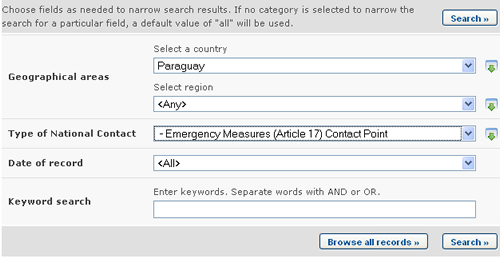
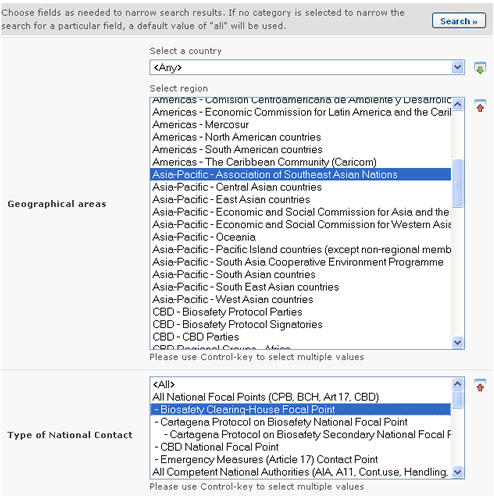
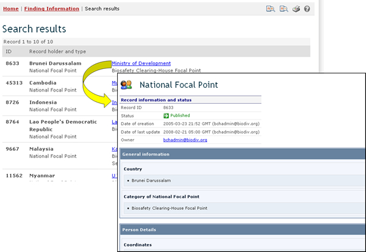

URL: http://bch.cbd.int/database/contacts/
El Artículo 19 del Protocolo presenta como requerimiento a los países designar Autoridades Nacionales Competentes y Puntos Focales Nacionales. Esta información así como la de sitios Web y Bases de Datos Nacionales se puede obtener desde la página Búsqueda de Contactos Nacionales.
La página de búsqueda de información acerca de Contactos Nacionales puede ser obtenida mediante el vínculo en el menú desplegable de Búsqueda de Información en la barra de navegación, o mediante el vínculo en el menú localizado en la barra lateral izquierda de la página Búsqueda de Información o en el vínculo Contactos Nacionales en el texto de dicha página.

La base de datos de Contactos Nacionales permite al usuario buscar lo siguiente:
-
Puntos Focales Nacionales del Protocolo de Cartagena sobre Bioseguridad (PFN-PCB), que son los que se encargan de gestionar la comunicación entre la Secretaría del CDB y los gobiernos respectivos;
-
Puntos Focales Nacionales del Centro de Intercambio de Información sobre Seguridad de la Biotecnología (PFN-CIISB), son los que se encargan de coordinar con la Secretaría del CDB lo relativo al desarrollo e implementación del CIISB;
-
Puntos de Contacto para Medidas de Emergencia, para recibir notificaciones bajo el Artículo 17 del Protocolo de Cartagena;
-
Autoridades Nacionales Competentes, que son designadas y autorizadas por los gobiernos para responsabilizarse de realizar las funciones administrativas requeridas por el Artículo 19 del Protocolo; y
-
Los sitios web Nacionales de Bioseguridad y las Bases de Datos.
En la página Búsqueda de Contactos Nacionales hay varios cuadros de criterios de búsqueda:
-
País: Campo de lista de selección para seleccionar un país.
-
Región: Campo de lista de selección para seleccionar una región.
-
Tipo de Contacto Nacional: Campo de lista de selección para limitar los resultados a ciertos tipos de contactos nacionales.
-
Fecha del Registro: Campo de fecha para acotar la búsqueda a un cierto intervalo de tiempo.
-
Búsqueda por Palabra clave: Palabra clave para refinar resultados según palabras claves
Ejemplo 1: Un usuario desea identificar los Puntos Focales de Medidas de Emergencia en Paraguay para asuntos relacionados con los movimientos transfronterizos no intencionales de OVM o medidas de emergencia. Seleccionando Paraguay del campo País y ‘Puntos de Contacto para Medidas de Emergencia (Artículo 17)’ de la lista del cuadro Tipo de Contacto Nacional (Type of National Contact), el usuario restringe la búsqueda a los registros que más parecieran proporcionar la información requerida.

Cuando se hace clic en el botón Realizar la búsqueda una página despliega cuáles son los Contactos Nacionales en Paraguay que tienen alguna responsabilidad en cuanto a las medidas de emergencia. Al hacer clic en el nombre del Punto Focal se abre el registro que contiene los detalles del contacto nacional.

Esta imagen fue tomada en Febrero del 2010 con el único propósito de proveer un ejemplo sobre el uso del CIISB.
Ejemplo 2: Un usuario desea identificar todos los Puntos Focales del CIISB de los países que son miembros de la Asociación de Naciones del Sud Este Asiático – ASEAN-. El usuario selecciona Asia-Pacifico - Asociación de Naciones del Sud Este Asiático - (Asia-Pacific - Association of Southeast Asian Nations) en el cuadro Seleccione el Grupo de País (Select Country Group) y Punto Focal del CIISB (Biosafety Clearing-House Focal Point) en el cuadro Tipos de Contactos Nacionales (Types of National Contacts). Seleccionando el botón se despliega una serie de resultados mostrando los Puntos Focales del CIISB en los países que son miembros del ASEAN.


Esta imagen fue tomada en Febrero del 2010 con el único propósito de proveer un ejemplo sobre el uso del CIISB.